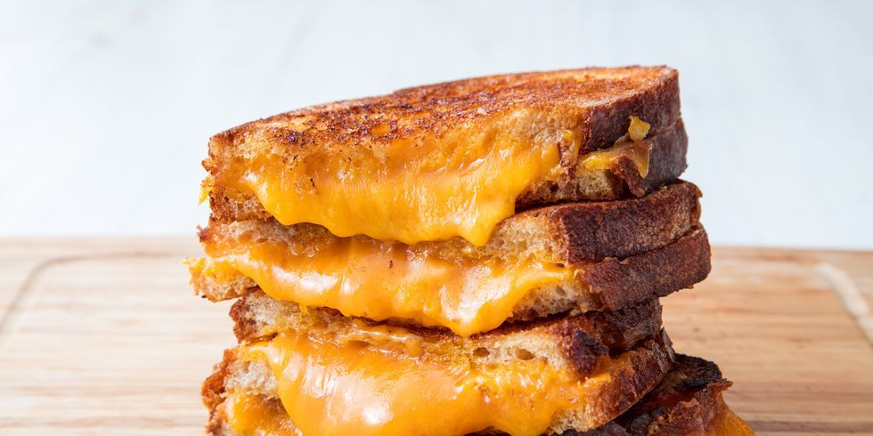

Grilled Cheese Recipe
- 2 Slices of Bread
- Shredded Cheddar Cheese
- Butter
Directions
- Spread about 1 tablespoon butter on one side of each slice of bread.
With butter side down, top each slice of bread with about ½ c cheddar.
- Heat a nonstick skillet over medium heat with 1 tablespoon butter.
When butter is melted add two slice of bread, butter side down.
Cook until bread is golden and cheese is starting to melt, 2 minutes.
Flip one pice of bread on top of the other and continue to cook 30 seconds.
- Repeat for the second sandwich, wiping the skillet clean if necessary.

Contact Info
My Email!
More Info!
The University of Montana
32 Campus Drive
Missoula, MT 59812